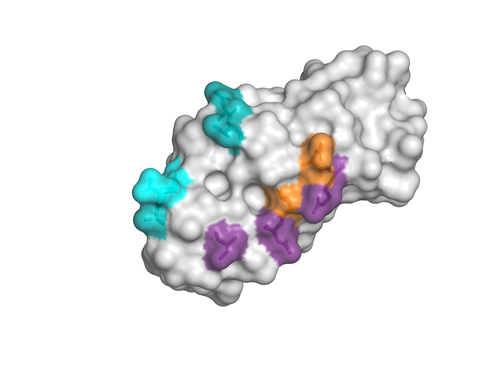
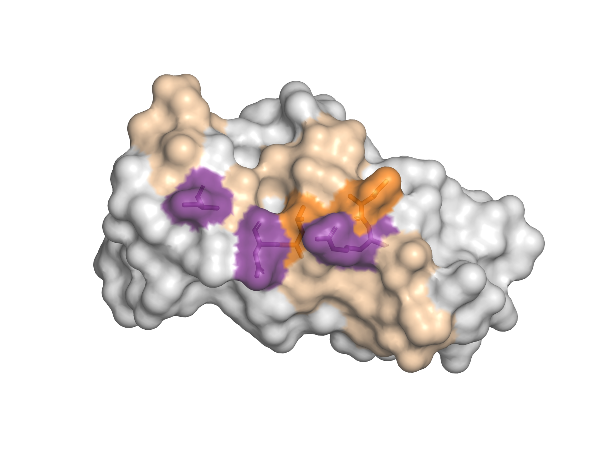
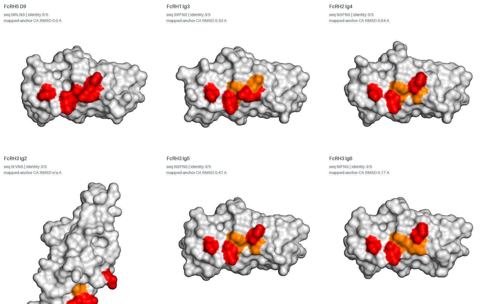
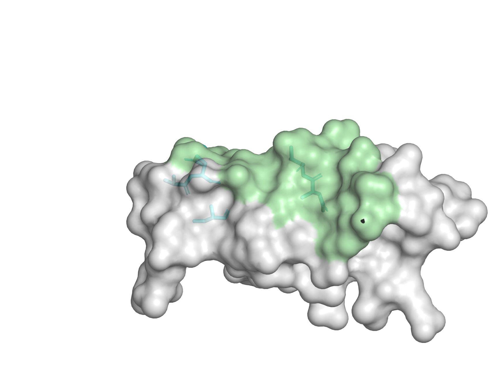
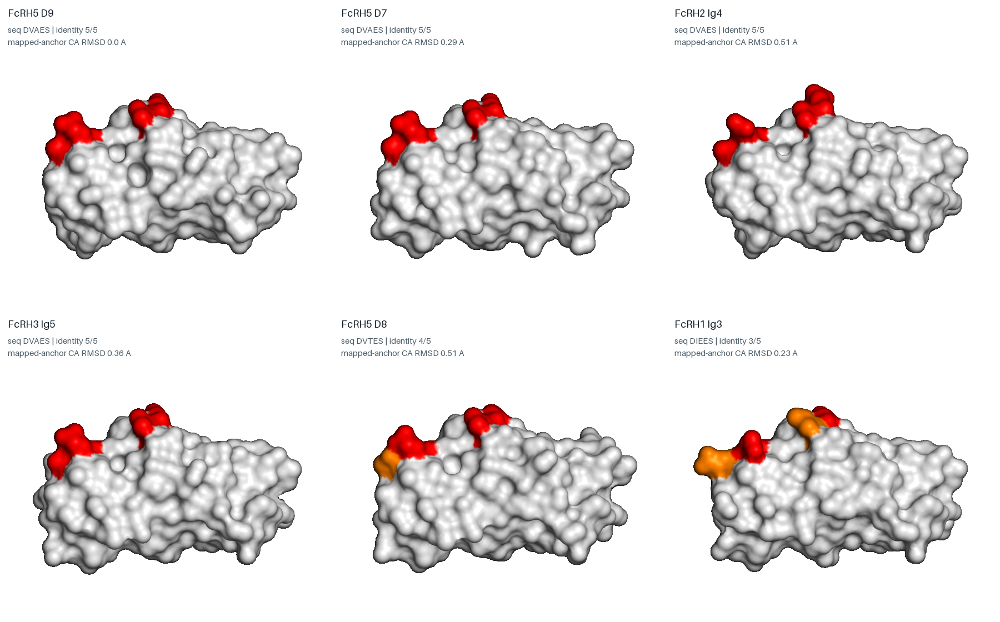
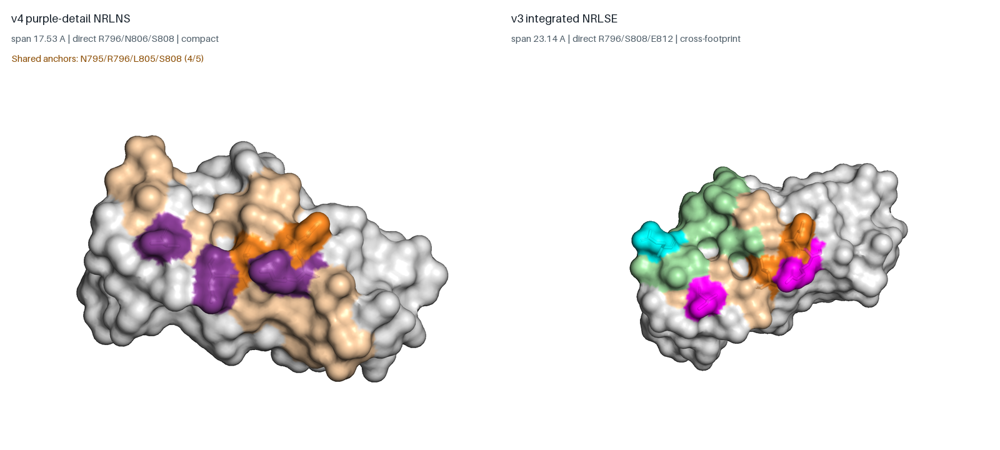
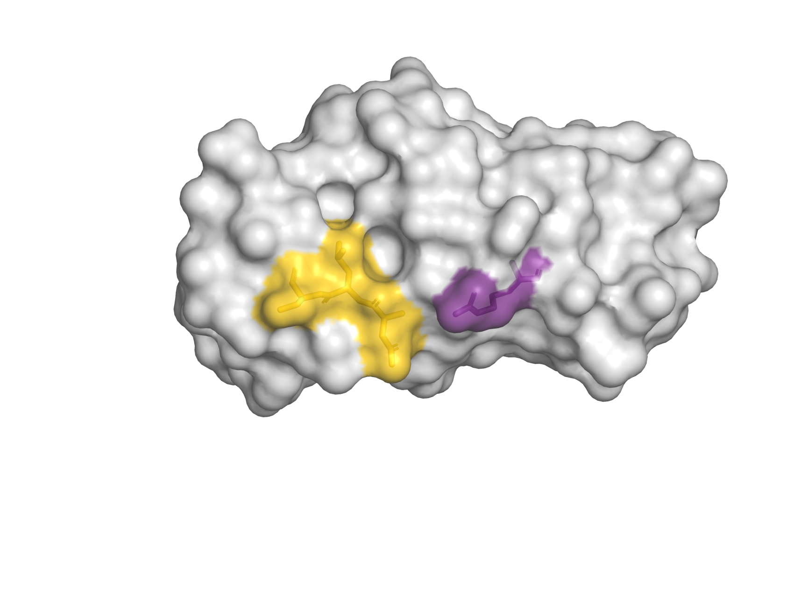
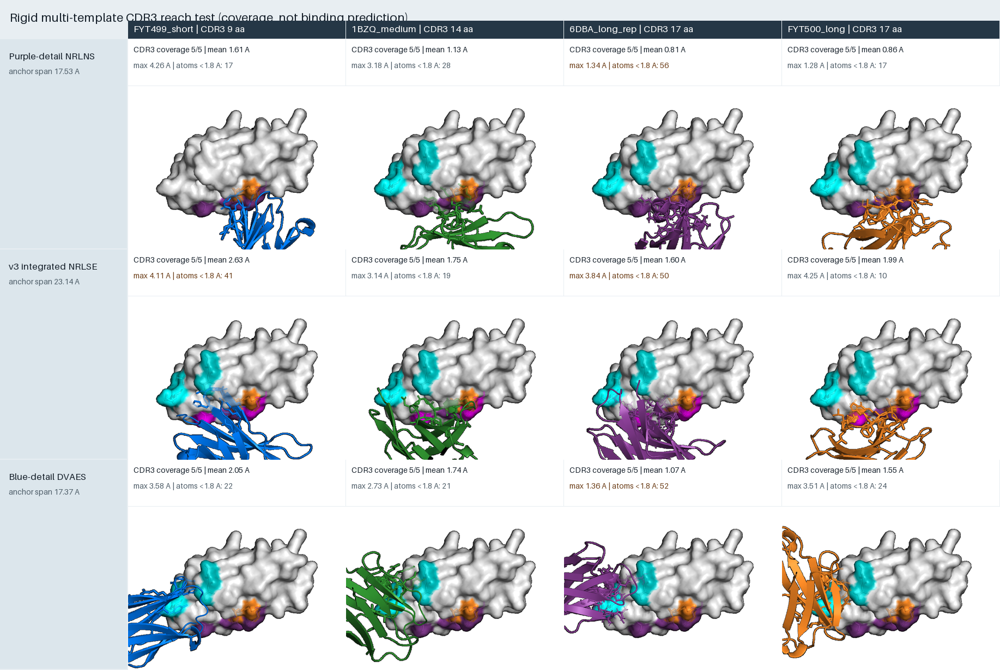

先看结论
首选表位为 N795/R796/L805/N806/S808（NRLNS）。它完整保留紫色细节图的 R796/N806/S808，17.53 Å 内形成紧凑表面；在其余 28 个比较域中没有 5/5 完整复现，也没有 4/5 近似复现。四种真实 VHH 模板的 CDR3 均可覆盖 5/5 锚点，平均锚点最近距离优于 v3 NRLSE。
紧凑、细节图约束强、序列组合特异。建议作为 D9 特异 VHH 主库的正向筛选面。
与 NRLNS 共享 4/5 锚点，跨度更宽；不依赖 N806，适合作为 N806 被糖链遮挡时的备选路线。
在 FcRH5-D7、FcRH2-Ig4、FcRH3-Ig5 完整复现，且局部骨架 RMSD 仅 0.29/0.51/0.36 Å。
1. 两张细节图如何转成候选表位
这里没有把完整 VH–VL 足迹重新揉成一个大表位，而是对两张细节图分别施加硬约束：
| 来源 | 必须保留的直接残基 | 搜索约束 | 优选结果 |
|---|---|---|---|
| 紫色/重链侧 | R796, N806, S808 | 全部保留；仅从同一图像支持的邻近暴露残基补 0–2 个 | NRLNS = N795/R796/L805/N806/S808 |
| 蓝色/轻链侧 | E812, S814 | 全部保留；补 1–3 个同侧邻近暴露残基 | DVAES = D790/V791/A811/E812/S814 |

2. 紫色/重链侧：NRLNS 能形成 D9 特异组合
直接残基 R796/N806/S808 单独组成的 RNS 并不特异：FcRH1-Ig3 可完整复现，多个 FcRH2/3 域高度相似。加入同一局部表面的 N795 与 L805 后，五锚点组合变为 NRLNS，其余比较域最高只有 3/5。
D1–D8 没有超过 2/5 的映射一致性。
最高为 FcRH1-Ig3、FcRH2-Ig4、FcRH3-Ig2/5/6。
适合由一个 CDR3 主导的连续识别面。


设计含义：VHH 不应只读取保守的 N806/S808，而应把带正电的 R796 与 L805 疏水接触纳入主识别，并尽量让 N795 形成方向性氢键，从而建立“组合门控”。
3. 蓝色/轻链侧：DVAES 的 FcRH2/3 交叉风险不可消除
细节图直接残基 E812/S814 在 12 个比较域中完整复现。对蓝侧图像支持的局部残基做穷举扩展后，最优 DVAES 仍在 FcRH5-D7、FcRH2-Ig4、FcRH3-Ig5 完整复现；FcRH5-D8 也达到 4/5。


结论：DVAES 的问题不是“序列看起来相似”这么简单，而是序列与表面形状双重复制。它可以作为双 VHH 中的协同/亲和臂，但不适合作为决定 D9 特异性的唯一表位；任何 DVAES 方案都必须把 FcRH5-D7/D8、FcRH2-Ig4、FcRH3-Ig5 作为硬反筛对象。
4. NRLNS 与 v3 NRLSE：哪个更适合 VHH

| 指标 | NRLNS | NRLSE |
|---|---|---|
| 锚点 | N795/R796/L805/N806/S808 | N795/R796/L805/S808/E812 |
| 跨度 | 17.53 Å | 23.14 Å |
| 细节图解释 | 完整保留紫色图 R796/N806/S808 | 跨紫/蓝两侧，保留 R796/S808/E812 |
| 28域特异性 | 0 个完整；0 个 4/5 | 0 个完整；0 个 4/5 |
| 四模板平均锚点距离 | 1.10 Å | 1.99 Å |
| 主要风险 | N806 sequon 占位未知 | 跨度较宽，对 CDR3 拓扑要求更高 |
| v4决策 | 主推荐 | 平行备选 |
确定性判断：在当前预测结构、细节图约束和多 CDR3 几何测试范围内，NRLNS 更适合做第一优先 VHH 设计，原因是它与 NRLSE 具有同等级的五位点序列特异性，却更紧凑、平均可达距离更小，并完整保留一张细节图的三个直接残基。NRLSE 不删除，而是作为处理 N806 潜在糖链风险的平行备选。

5. 多 CDR3 长度可行性与推荐库设计
测试采用 4 个真实 VHH 骨架，CDR3 长度为 9、14、17、17 aa；只用 CDR3 原子判断锚点可达性，整 VHH 用于碰撞计数。三套候选都可在某个刚性取向达到 5/5，但这是几何可达性，不是亲和力预测。

NRLNS 主库建议
- 主跨度：CDR3 14–17 aa，至少覆盖 14/15/16/17 四档和多种环拓扑；不要只按长度单轴扩库。
- 短环对照：9–12 aa。9 aa 模板也能覆盖 5/5，可用于寻找更平坦、更少非特异接触的结合模式，但不作为唯一库。
- 化学目标：CDR3 对 R796 设计酸性/芳香夹持，对 L805 设计疏水口袋，对 N795/N806/S808 设计方向性氢键；CDR1/CDR2 用于稳定边缘和控制入射角。
- 糖链分支：若 N806 占位，分别建立“避糖型”和“糖链参与型”小库；若糖链遮挡稳定且异质性高，则切换 NRLSE。
反筛顺序
- FcRH5 D9 阳性筛选，并用 R796A、L805A、N806Q、S808A、E812A/S814A 做定位。
- 第一层硬反筛：FcRH5 D7、D8；FcRH2-Ig4；FcRH3-Ig5；FcRH1-Ig3。
- 第二层：FcRH3-Ig2/Ig6 和完整 FcRH1/2/3/4/6 ECD；同时比较可溶蛋白与细胞表面构象。
- 对有希望克隆运行多模型复合物预测、糖基化结构评估、侧链松弛与实验突变闭环。
6. 与专利实验是否相符
| 专利观察 | v4解释 |
|---|---|
| D9 删除后失去结合 | 支持靶点依赖 FcRH5 D9；与两套 v4 候选均相容，但不能区分具体残基 |
| 可溶 FcRH3/FCRL3：约 90 nM；FcRH5：约 2.4 nM | 证明专利中“少许结合”是 FcRH3 旁系受体，不是 FcRH5 自身 D3；蓝侧 FcRH3-Ig5 高相似与弱交叉方向相符 |
| FcRH1/2/3/4/5 细胞 FACS：主要结合 FcRH5 | 更符合 NRLNS 的组合特异性；也说明 DVAES 的序列/形状风险不会自动等价为完整受体细胞脱靶 |
| 没有孤立 FcRH5-D3 弱结合实验 | 不能把专利弱结合解释为 FcRH5-D3 |
因此，NRLNS 与专利的 D9 依赖和细胞家族选择性更一致；DVAES 的 FcRH3/FcRH2 风险与可溶 FcRH3 弱结合“方向一致”，但专利细胞实验未显示明确 FcRH2/FcRH3 表面结合，所以它是必须实验反筛的风险信号，而不是已证实脱靶。
7. 文件说明
- 01_detail_constrained_epitopes.pse：两套候选在 D9 上的交互式场景。
- 02_all_domains_purple_NRLNS.pse：NRLNS 对 29 个域的结构映射。
- 03_all_domains_blue_DVAES.pse：DVAES 对 29 个域的结构映射。
- 04_multi_CDR3_epitope_coverage.pse：3 套表位 × 4 个 CDR3 模板的 12 个场景。
- 候选摘要表；29域序列/表面比较；NRLNS vs NRLSE；多CDR3明细；证据边界与验证。
PyMOL 颜色提示：D9 表面通常为白色；紫色为 NRLNS；青色为 DVAES；橙色用于补充/共享区域或替换位点。各 PSE 内可按 scene 切换视图。
证据等级与边界
本报告给出的是结构预测约束下的设计优先级，不是实验表位鉴定。细节图没有原始坐标和能量分解；比较结构为预测模型；多 CDR3 为未松弛刚性覆盖。因此锚点必须通过突变、竞争结合、糖型控制和完整受体反筛验证。尤其不能把“没有 5/5 序列复现”直接等同为“绝无脱靶”。